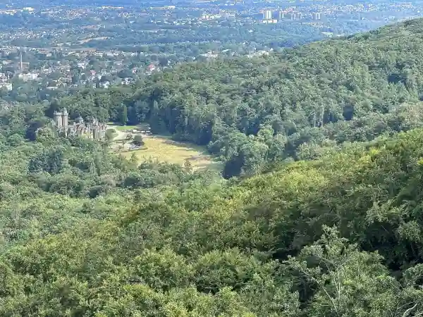
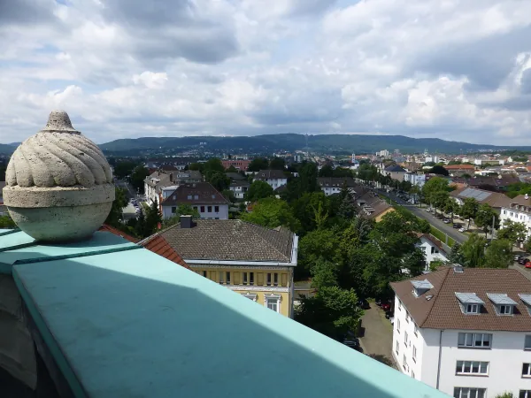
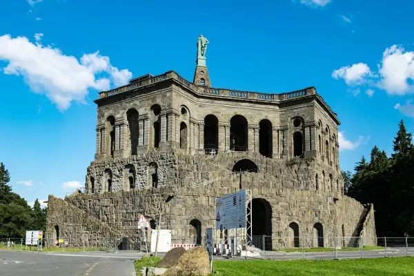
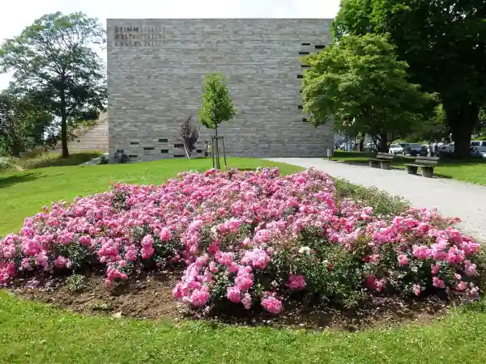

Start / Aussichtspunkte
Aaron Schiele
geprüft am
geprüft am
Herkules: der große Blick über die Achse
Ganz oben im Bergpark steht der Herkules, das Wahrzeichen der Stadt. Von hier läuft eine barocke Sichtachse über die Kaskaden und das Schloss Wilhelmshöhe die Wilhelmshöher Allee hinunter bis in die Innenstadt. Besonders eindrucksvoll wird es bei Inversionswetter, wenn die Stadt unten in den Wolken liegt.
Das Monument mit der großen Aussichtsplattform ist vom 1. April bis 31. Oktober dienstags bis sonntags und an Feiertagen von 10 bis 17 Uhr geöffnet, im Winter bleibt es geschlossen. Der Eintritt läuft über das Tagesticket Wilhelmshöhe für 8 Euro, ermäßigt 5 Euro, unter 18 Jahren frei. Alles zum Besuch steht unter Herkules Kassel.
Löwenburg: auf den Turm der Ritterburg

Die Löwenburg liegt mitten im Bergpark, und ihr Bergfried hat eine Aussichtsplattform. Der Aufstieg kostet 2 Euro zusätzlich zum Ticket. Die Burg selbst besichtigst du nur mit Führung zur vollen Stunde, die letzte startet eine Stunde vor Schluss.
Von April bis Oktober ist die Löwenburg dienstags bis sonntags von 10 bis 17 Uhr geöffnet, von November bis März nur freitags bis sonntags von 10 bis 16 Uhr. Buch die Führung am besten vorher, das Tagesticket allein garantiert keinen Platz. Mehr unter Löwenburg Kassel.
Einen schönen Blick auf die Löwenburg selbst hast du ein paar Meter von der Prinzenquelle entfernt.
Grimmwelt-Dach: Aussicht ohne Eintritt
Das Dach der Grimmwelt am Weinberg ist eine 2.000 Quadratmeter große Terrasse mit Blick über die Südstadt bis hinüber zum Herkules. Es ist das ganze Jahr geöffnet und kostet keinen Eintritt, auch ohne Ticket für die Ausstellung. Wer mag, spielt oben eine Runde Tischtennis, Schläger und Bälle gibt es gegen Pfand an der Kasse.
Rund um die Grimmwelt liegen die Weinbergterrassen, vom 1. April bis 31. Oktober täglich von 8 bis 19.30 Uhr geöffnet, ebenfalls frei. Mehr unter Grimmwelt Kassel.
Schöne Aussicht: Panorama über die Karlsaue
Die Straße Schöne Aussicht trägt ihren Namen zu Recht. Sie liegt am Hang direkt über der Karlsaue, und von hier schaust du weit über den Staatspark. Ein Stück Stadtgeschichte gibt es dazu: Die Brüder Grimm wohnten von 1824 bis 1826 im Haus Bellevue 9, an der Straße lebten auch Robert Bunsen und Louis Spohr. Mehr zum Park unten unter Orangerie und Karlsaue.
Landesmuseum: mitten in der Stadt nach oben

Den weithin sichtbaren Turm des Hessischen Landesmuseums kannst du besteigen. Turmbesichtigungen gibt es zu jeder vollen und halben Stunde, Änderungen sind möglich. Von oben schaust du über die Innenstadt.
Hohes Gras: der Turm im Habichtswald
Am Hohen Gras, dem höchsten Punkt im Naturpark Habichtswald, steht ein rund 31 Meter hoher Aussichtsturm, eingeweiht 1890. Daneben liegt die Waldgaststätte, geöffnet täglich von 11 bis 18 Uhr, montags ist Ruhetag. Feste Öffnungszeiten für den Turm nennt keine offizielle Seite, frag am besten in der Gaststätte nach.
Die Bäume rund um den Turm sind mit den Jahren gewachsen und verdecken einen Teil der Sicht. Der Weg lohnt trotzdem, weil hier oben schöne Wanderungen starten, etwa die Runde H10 über den Dächern der Stadt. Von der Bushaltestelle „Hohes Gras“ sind es rund 500 Meter bis zum Turm. Mehr unter Wandern im Habichtswald.
Häufige Fragen
Wo hat man den besten Blick über Kassel?
Den bekanntesten Blick über Kassel hast du vom Herkules: Die Sichtachse führt über den Bergpark und das Schloss Wilhelmshöhe bis in die Innenstadt. Die Aussichtsplattform am Monument ist vom 1. April bis 31. Oktober geöffnet.
Kann man in Kassel ohne Eintritt eine Aussicht genießen?
Ja, das Dach der Grimmwelt ist das ganze Jahr geöffnet und kostet keinen Eintritt. Auch die Straße Schöne Aussicht über der Karlsaue ist frei zugänglich.
Ist die Aussichtsplattform am Herkules im Winter geöffnet?
Nein, das Herkules-Monument mit der Aussichtsplattform ist in den Wintermonaten geschlossen und öffnet wieder am 1. April.
Was kostet der Turm der Löwenburg?
Der Aufstieg auf den Bergfried der Löwenburg kostet 2 Euro zusätzlich zum Ticket. Die Löwenburg besichtigst du nur mit Führung zur vollen Stunde.
Kann man den Turm am Hohen Gras besteigen?
Am Hohen Gras steht ein rund 31 Meter hoher Aussichtsturm neben der Waldgaststätte. Feste Öffnungszeiten für den Turm nennt keine offizielle Seite, frag am besten in der Gaststätte nach, die außer montags täglich von 11 bis 18 Uhr geöffnet ist.
Quellen abgerufen am 17.11.2026
- Hessen Kassel Heritage Herkules · Löwenburg · Schloss Wilhelmshöhe · Hessisches Landesmuseum
- Grimmwelt Über uns
- Stadt Kassel Grimmwelt
- Visit Kassel Weinbergterrassen · Schöne Aussicht · Hohes Gras · Waldgaststätte Hohes Gras · Extratour H10
- Hessenschau Sieben Tipps, wo Kassel schön ist
- Wikipedia Herkules (Kassel) · Hohes Gras
Weiterlesen

Herkules Kassel
Herkules Kassel: Plattform und Oktogon vom 1. April bis 31. Oktober, Eintritt 8 Euro, unter 18 frei. Tickets, Stufen, Bus 22 und Parken.
WeiterlesenLöwenburg Kassel
Löwenburg Kassel: Öffnungszeiten im Sommer und Winter, warum du nur mit Führung hineinkommst, was Tickets kosten und wo du parkst.
Weiterlesen
Grimmwelt Kassel
Grimmwelt Kassel: Öffnungszeiten, Eintritt für Erwachsene, Kinder und Familien, was die Ausstellung zeigt, Dachterrasse und Anreise mit Tram und Auto.
Weiterlesen